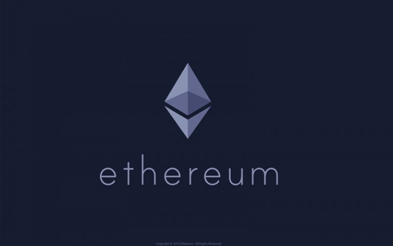
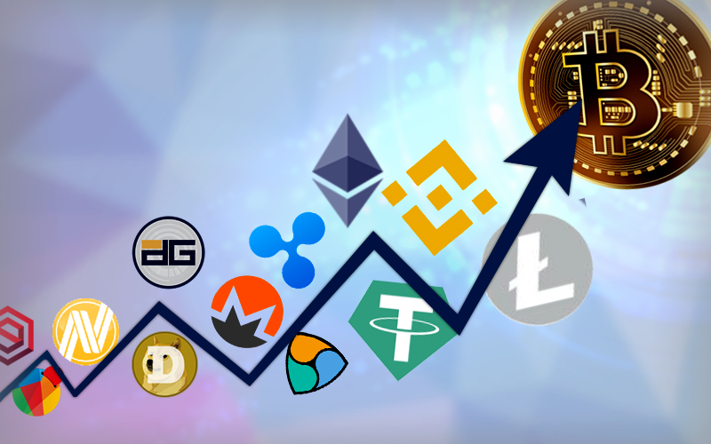

Wiedz co posiadasz i dlaczego to posiadasz
Bitcoin
Bitcoin - jest to globalny systemem płatności elektronicznych typu peer-to-peer, który umożliwia stronom zawieranie transakcji bezpośrednio między sobą bez konieczności korzystania z usług pośrednika, takiego jak bank. Bitcoin whitepaper, który nakreślił jak ta rewolucyjna nowa waluta będzie działać, został wydany w 2008 roku, a sieć Bitcoin uruchomiona w 2009 roku.
Od momentu uruchomienia Bitcoin nie doświadczył żadnego przestoju, pozwalając każdemu na transfer pieniędzy w dowolnym czasie i z dowolnego miejsca. Bitcoin jest często uważany za cyfrową alternatywę zarówno dla walut fiat, jak i złota. Dzieje się tak dlatego, że Bitcoin może być wydawany i przechowywany tak samo jak tradycyjne pieniądze, ale jest również ograniczonym zasobem, a tym samym dobrym magazynem wartościowym jak złoto.
Ethereum
W odróżnieniu od Bitcoina którego blockchain jest wykorzystywany głównie w celach związanych z wytwarzaniem oraz obrotem tą walutą, Ethereum jest przede wszystkim platformą do zawierania kontraktów, czyli skryptów i aplikacji zapisanych w łańcuchu bloków. Waluta Erther jest tylko jedną z części całego protokołu Ethereum. Protokół ten tworzy znakomite środowisko dla tworzenia nowych rozwiązań dla firm, chcących korzystać możliwości zawierania kontraktów w zdecentralizowanej sieci i zapewniającej maksymalne bezpieczeństwo. Podaż – nieznana jest maksymalna ilość monet Ethereum, natomiast użytkownicy Ethereum Classic ograniczyli tą ilość do 230 milionów.

Altcoin
Mianem altcoinów określa się wszystkie kryptowaluty nie licząc bitcoina. Co za tym idzie, etherium również jest altcoinem, jednak ze względu na udziały tej waluty w rynku postanowiłem ją na swój sposób wyróżnić. Jak przykłady altcoinów możemy podać:

XRP (XRP) – dawniej Ripple, choć firma ta odcięła od kontrolowanej przez siebie kryptowaluty zmieniając jej nazwę; system płatności międzybankowych
Litecoin (LTC) – ulepszony bitcoin, działający szybciej, o znacznie niższych kosztach przelewów; bitcoina nazywa się złotem internetu, litecoina srebrem;
Tether (USDT) – stable coin, czyli token w założeniu zawsze kosztujący 1 USD; projekt kontrowersyjny ze względu na jego scentralizowany charakter, brak wiarygodnych audytów pokrycia kryptowaluty w dolary, a także ciągły dodruk USDT;
Monero (XMR) – kryptowaluta zapewniająca anonimowość przy przesyłaniu środków.
Litecoin (LTC) – ulepszony bitcoin, działający szybciej, o znacznie niższych kosztach przelewów; bitcoina nazywa się złotem internetu, litecoina srebrem;
Tether (USDT) – stable coin, czyli token w założeniu zawsze kosztujący 1 USD; projekt kontrowersyjny ze względu na jego scentralizowany charakter, brak wiarygodnych audytów pokrycia kryptowaluty w dolary, a także ciągły dodruk USDT;
Monero (XMR) – kryptowaluta zapewniająca anonimowość przy przesyłaniu środków.
Bibliografia
https://tokeny.pl/altcoin/https://bithub.pl/opisy-kryptowalut/ethereum/
https://capital.com/pl/rodzaje-kryptowalut
https://www.youtube.com/watch?v=E6-8ax0nxsA
https://www.cryptonews.pl/gielda-kryptowalut-jak-dziala-i-czym-jest/
https://www.fxmag.pl/artykul/kopanie-bitcoina-btc-i-proof-of-work-co-to-jest-4-kurs-bitcoina-od-zera
https://www.fxmag.pl/artykul/co-to-jest-blockchain-i-jak-dziala-2-kurs-bitcoina-od-zera